Qual a ordem correta para começar a assistir Star Wars?
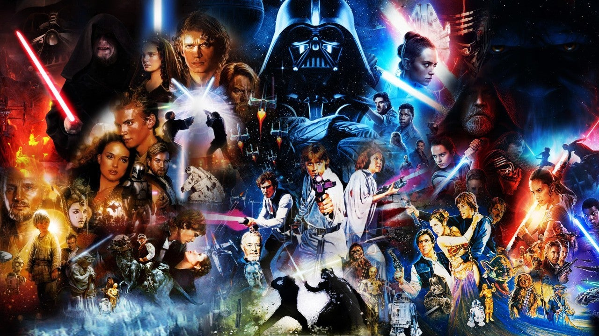
Se você é fã de Star Wars, sabe que a franquia tem uma quantidade imensa de filmes e séries. Mas nem sempre é fácil saber a ordem correta para assistir todos eles. Aqui está a ordem cronológica para não perder nenhuma história importante!
1. Star Wars: Acolyte (série)
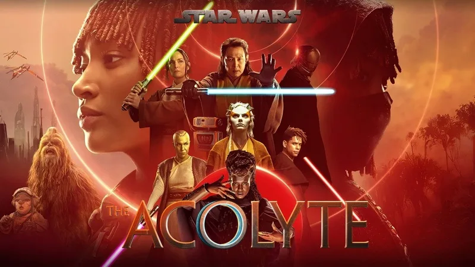
The Acolyte se passa aproximadamente 100 anos antes de Star Wars: Episódio I — A Ameaça Fantasma (1999). A série ocorre no final da era da Alta República, um período de paz e prosperidade onde a Ordem Jedi estava no auge do seu poder.
2. Star Wars: A Ameaça Fantasma (Filme)
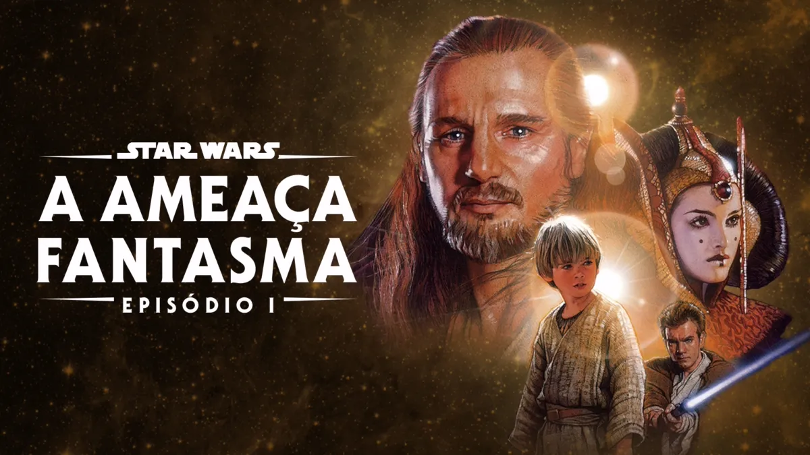
Star Wars: Episódio I - A Ameaça Fantasma (1999) inicia a saga focando na origem de Anakin Skywalker e na política da República.
3. Star Wars: O Ataque dos Clones (Filme)
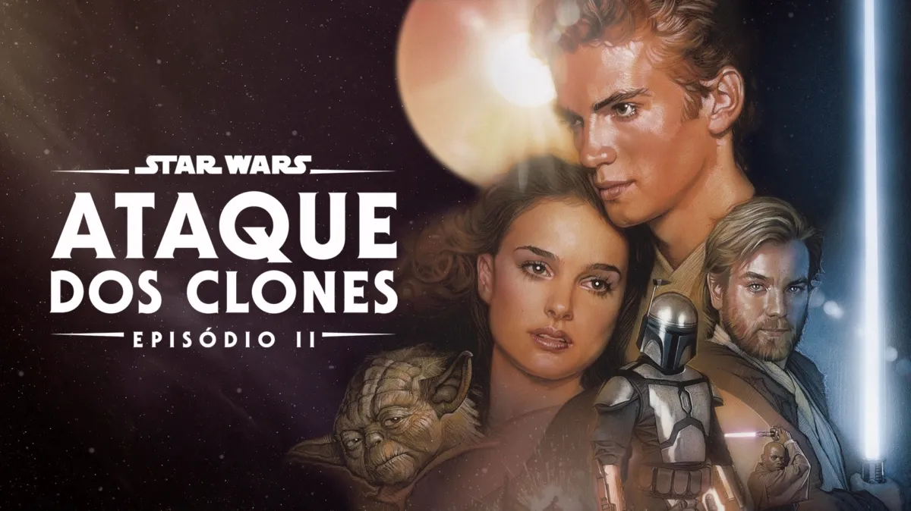
Star Wars: Episódio II - O Ataque dos Clones (2002) se passa 10 anos após os eventos do primeiro filme, mostrando o crescimento de Anakin e a crescente ameaça dos separatistas.
4. Star Wars: The Clone Wars (filme)
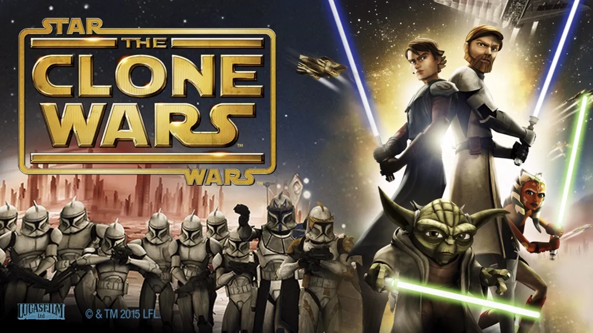
Star Wars: The Clone Wars (2008) é um filme animado que se passa entre os episódios II e III, explorando as batalhas e personagens durante as Guerras Clônicas.
5. Star Wars: The Clone Wars (série)
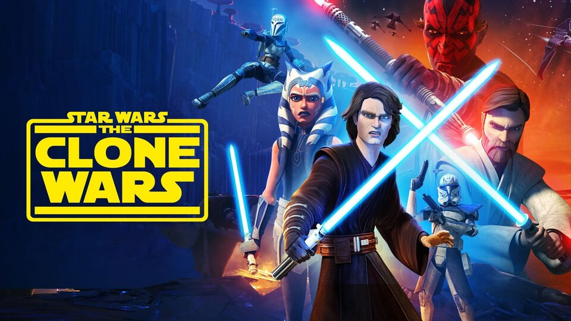
Star Wars: The Clone Wars (2008-2020) é uma série animada que se passa entre os episódios II e III, explorando as batalhas e personagens durante as Guerras Clônicas.
6. Star Wars: Histórias Dos Jedi (série)
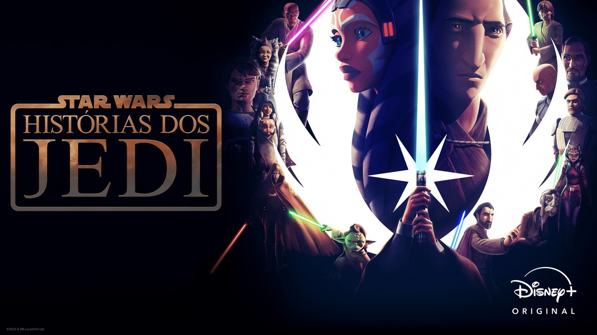
Star Wars: Histórias dos Jedi (2022) explora o passado do Conde Dookan e de Ahsoka Tano. A trama, focada na época da trilogia prequel, mostra como os dois personagens tomaram caminhos opostos após questionarem a Ordem Jedi.
7. Star Wars: A Vingança dos Sith (Filme)
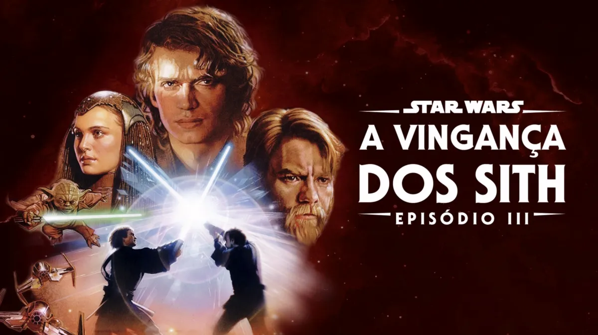
Star Wars: Episódio III - A Vingança dos Sith (2005) é o terceiro filme da trilogia prequel, que mostra a queda de Anakin Skywalker para o lado sombro e a fundação do Império Galáctico.
8. Star Wars: Contos Do Império (série)
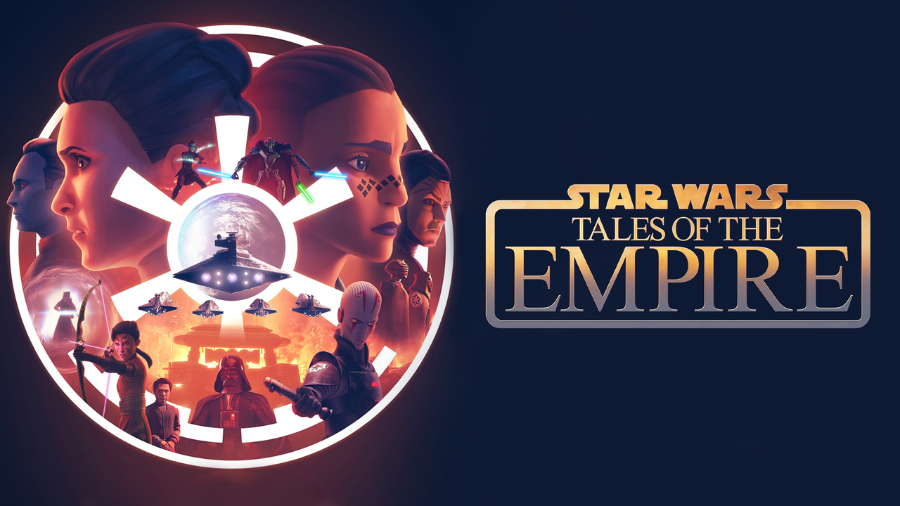
Star Wars: Contos do Império (2022) é uma série animada que narra as trajetórias opostas da bruxa Morgan Elsbeth e da ex-Jedi Barriss Offee durante a era do Império Galáctico.
9. Star Wars: Contos Do Submundo (série)
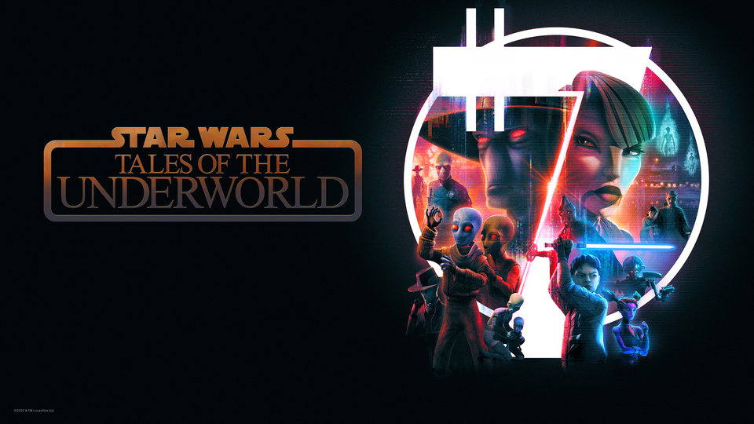
Star Wars: Contos do Submundo (2022) é uma série animada que explora o submundo do crime, com Ventress buscando redenção e Bane confrontando seu passado.
10. Star Wars: The Bad Batch (série)
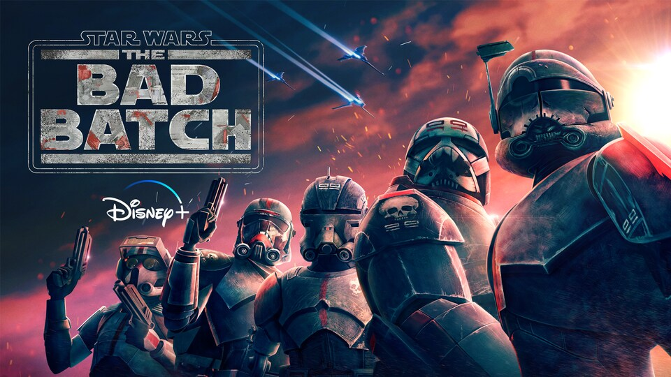
Star Wars: The Bad Batch (2021) é uma série animada que acompanha a Força Clone 99, um esquadrão de elite com mutações genéticas, tentando encontrar um novo propósito logo após a Guerra dos Clones.
11. Star Wars: Maul-Shadow Lord (série)
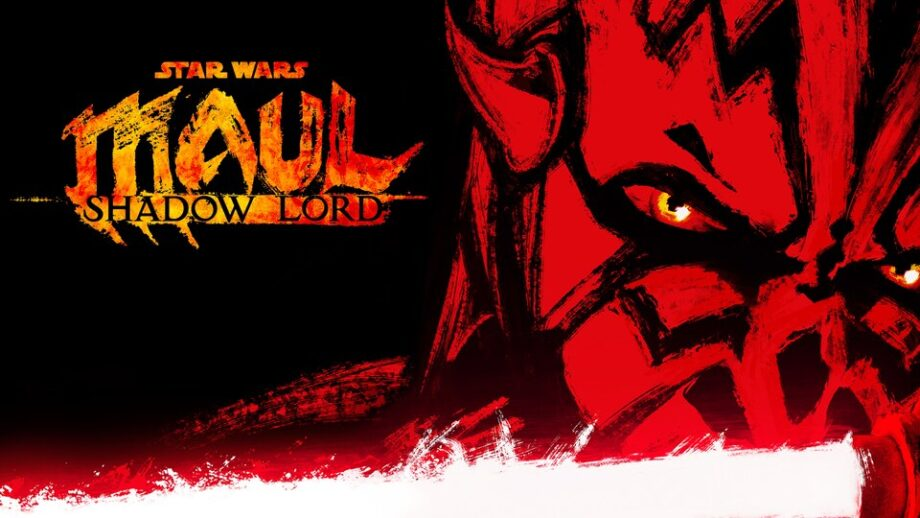
Star Wars: Maul - Shadow Lord (2026) é uma série animada onde Maul tenta reconstruir seu sindicato do crime em um planeta urbano perigoso, livre do controle Imperial, enquanto busca vingança e cruza o caminho de uma Padawan desiludida
12. Star Wars: Solo: Uma História Star Wars (filme)
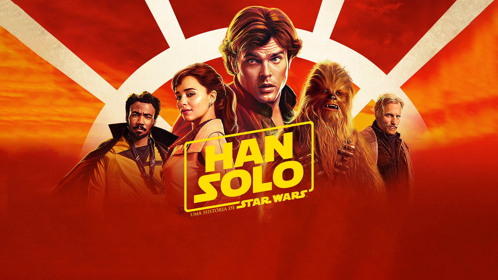
Star Wars: Solo - Uma História Star Wars (2018) é um filme que se passa entre os episódios III e IV, mostrando a juventude de Han Solo e como ele conheceu Chewbacca e Lando Calrissian.
13. Star Wars: Obi-Wan Kenobi (série)
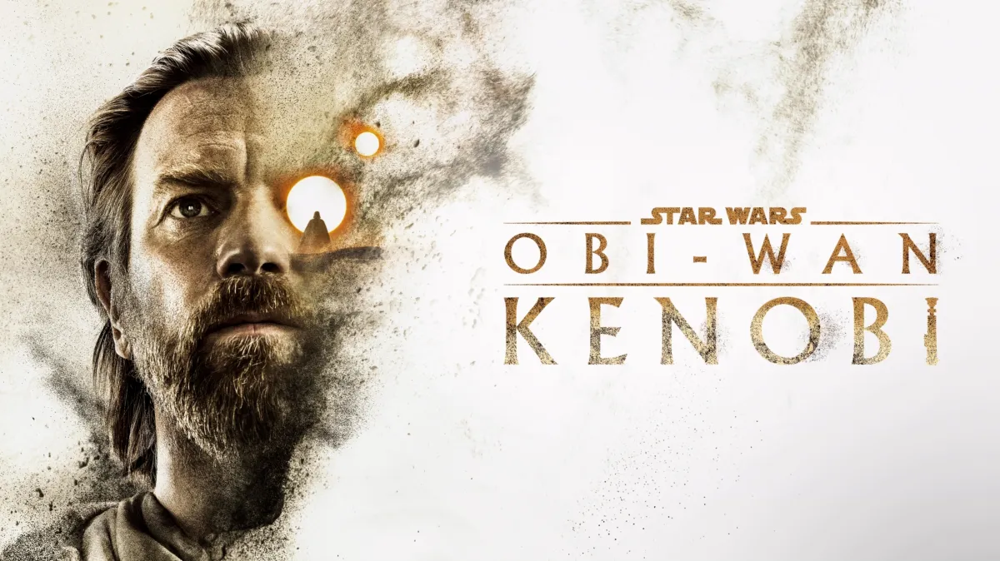
Star Wars: Obi-Wan Kenobi (2022) é uma série que se passa 10 anos após os eventos de A Vingança dos Sith, mostrando Obi-Wan em seu exílio no planeta Tatooine, protegendo o jovem Luke Skywalker enquanto enfrenta o Império e seu antigo aprendiz, Darth Vader.
14. Star Wars: Andor (série)
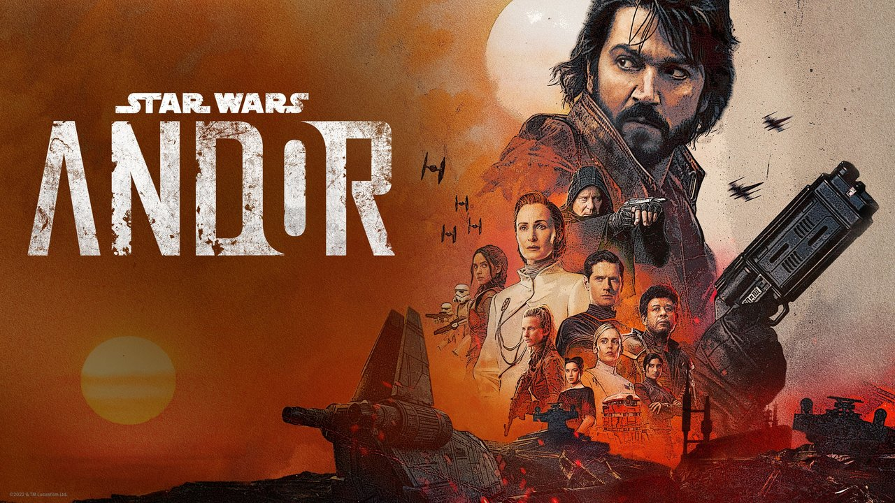
Star Wars: Andor (2022) é uma série que se passa 5 anos antes dos eventos de Rogue One, mostrando a jornada de um agente imperial que se torna uma resistência contra o Império.
15. Star Wars Rebels (série)
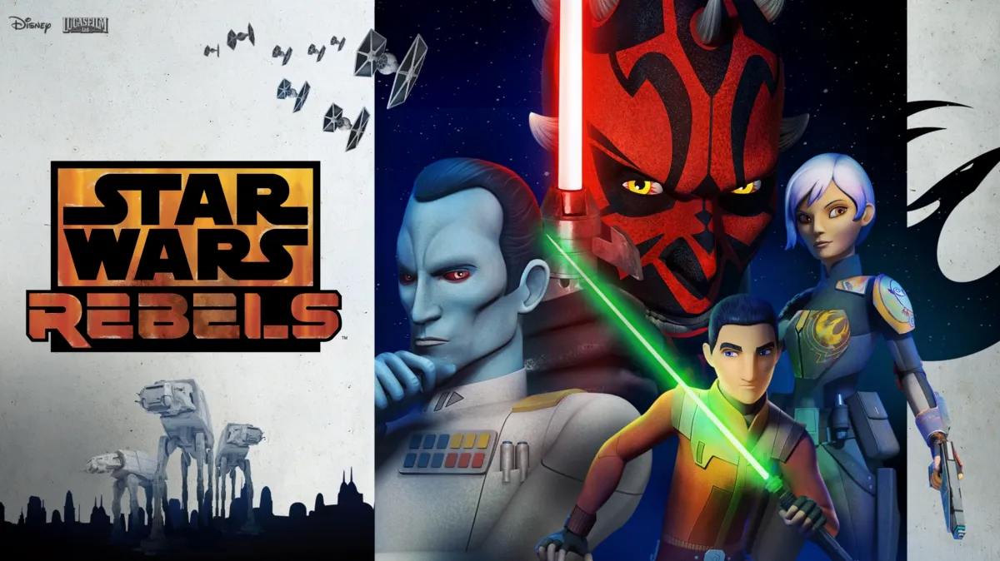
Star Wars Rebels (2014-2018) é uma série animada que acompanha a tripulação da nave Fantasma, um pequeno grupo de rebeldes que luta contra a tirania do Império Galáctico, fornecendo as faíscas iniciais para a Aliança Rebelde.
16. Rogue One: Uma História Star Wars (filme)
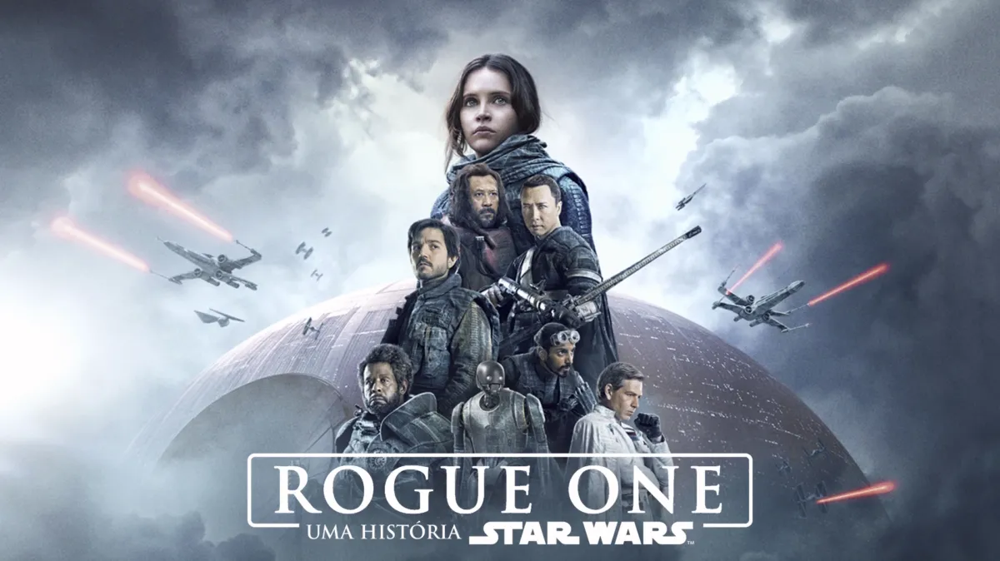
Rogue One: Uma História Star Wars (2016) é um filme que se passa pouco antes dos eventos de Star Wars: Episódio IV - Uma Nova Esperança, mostrando a missão de um grupo de rebeldes para roubar os planos da Estrela da Morte.
17. Star Wars: Uma Nova Esperança (filme)
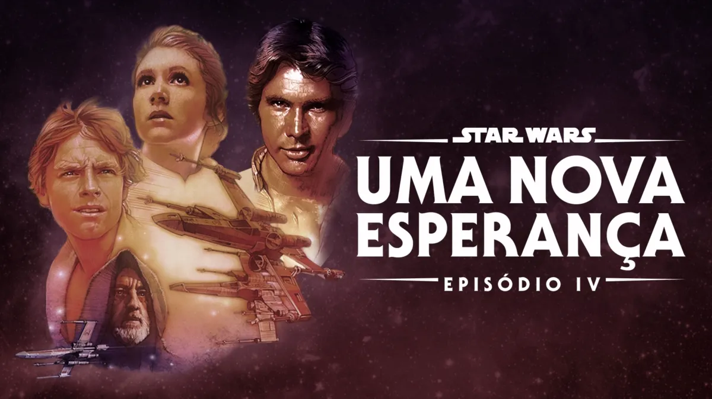
Star Wars: Uma Nova Esperança (1977) é um filme que se passa 19 anos após A Vingança dos Sith, mostrando a jornada de Luke Skywalker, Han Solo, Chewbacca e Princess Leia em sua luta contra o Império Galáctico.
18. Star Wars: O Império Contra-Ataca (filme)
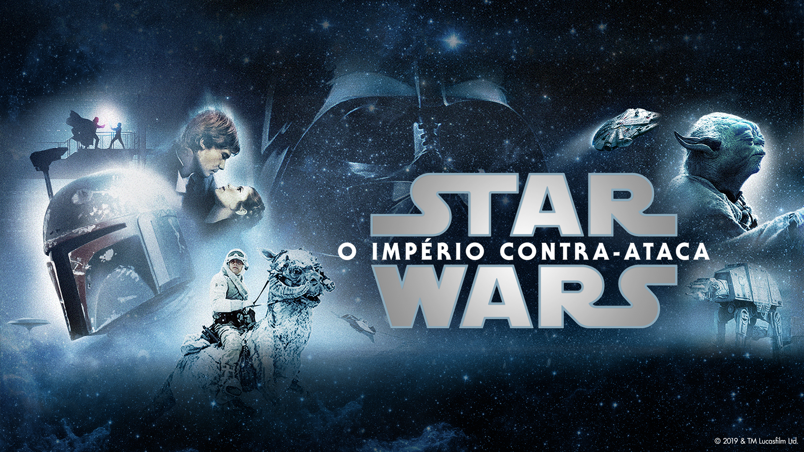
Star Wars: O Império Contra-Ataca (1980) é um filme que se passa pouco tempo após Uma Nova Esperança, mostrando a continuação da luta dos rebeldes contra o Império, com revelações chocantes e desafios crescentes.
19. Star Wars: O Retorno de Jedi (filme)
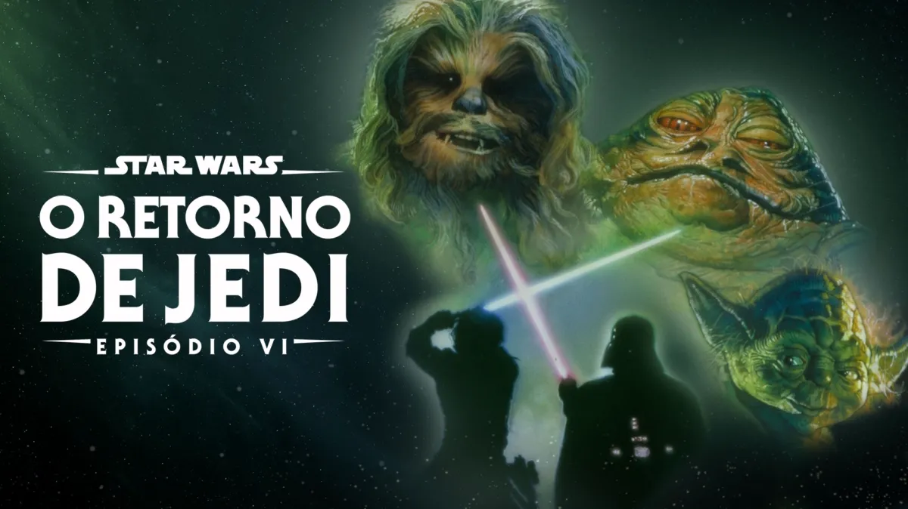
Star Wars: O Retorno de Jedi (1983) é um filme que conclui a trilogia original, mostrando a batalha final entre os rebeldes e o Império, a redenção de Anakin Skywalker e o destino dos personagens principais.
20. O Mandaloriano (série)
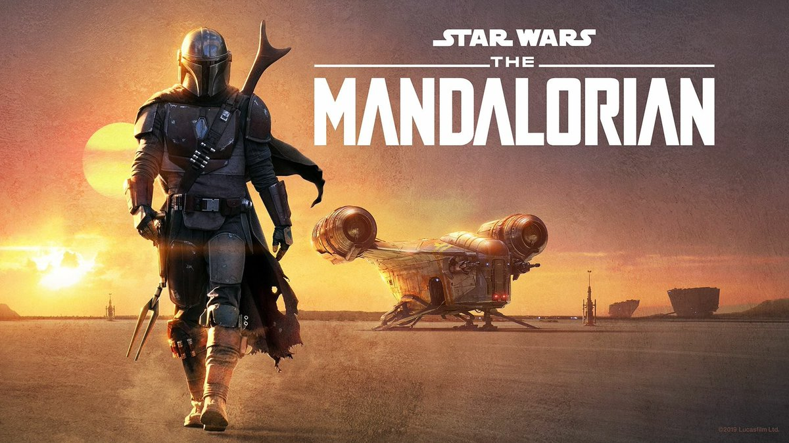
O Mandaloriano (2019-) é uma série que se passa 5 anos após os eventos de Star Wars: O Retorno de Jedi, mostrando a jornada de um Mandaloriano que se torna um herói na luta contra o Império e seus aliados.
21. Star Wars: O Livro de Boba Fett (série)
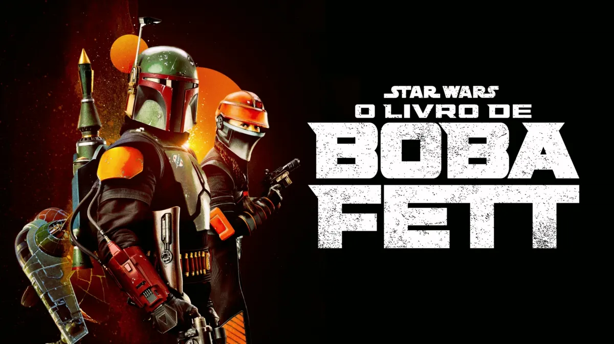
Star Wars: O Livro de Boba Fett (2021-) é uma série que se passa 5 anos após os eventos de Star Wars: O Retorno de Jedi, mostrando a jornada de Boba Fett em sua busca por identidade e pertencimento em um universo em constante mudança.
22. Ahsoka (série)
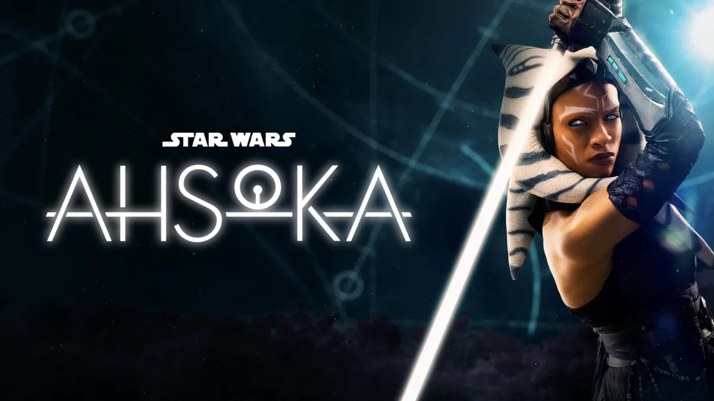
Ahsoka (2023-) A trama foca em ação, focando na busca de Ahsoka pelo vilão com ajuda de aliados de Star Wars Rebels.
23. Star Wars: Skeleton Crew (série)
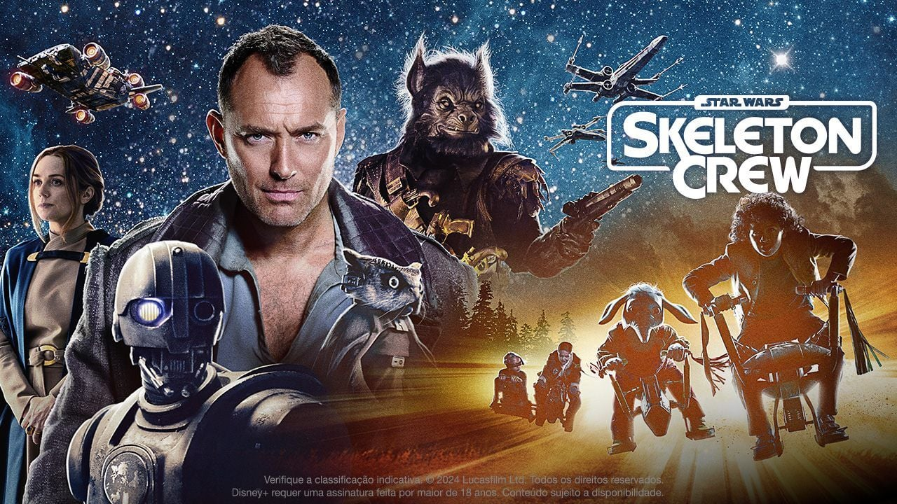
Star Wars: Skeleton Crew (2024-) Conta a história da busca de quatro crianças por seu planeta natal, após se perdem na galáxia de Star Wars, e dos estranhos alienígenas e lugares perigosos que eles encontram durante sua aventura.
24. Star Wars Resistance (série)
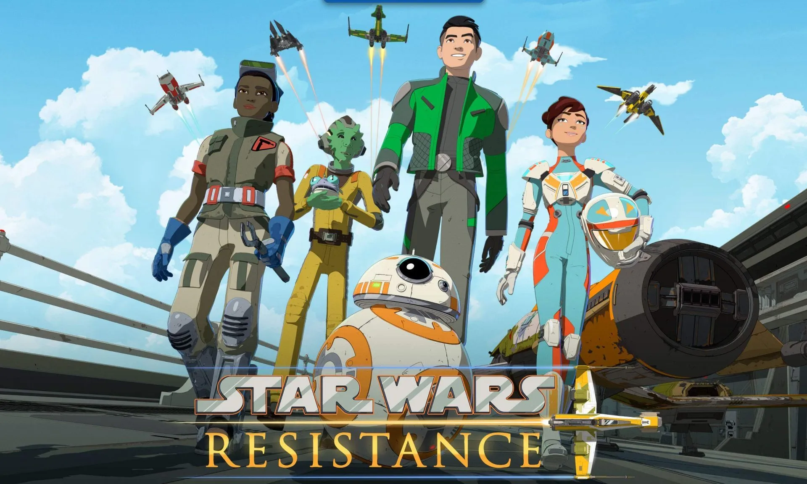
Star Wars Resistance (2020-2021) é uma série que se passa 30 anos após os eventos de Star Wars: O Retorno de Jedi, mostrando a luta dos rebeldes contra o Império, com foco em personagens originais e suas aventuras na galáxia de Star Wars.
25. Star Wars: O Despertar da Força (filme)
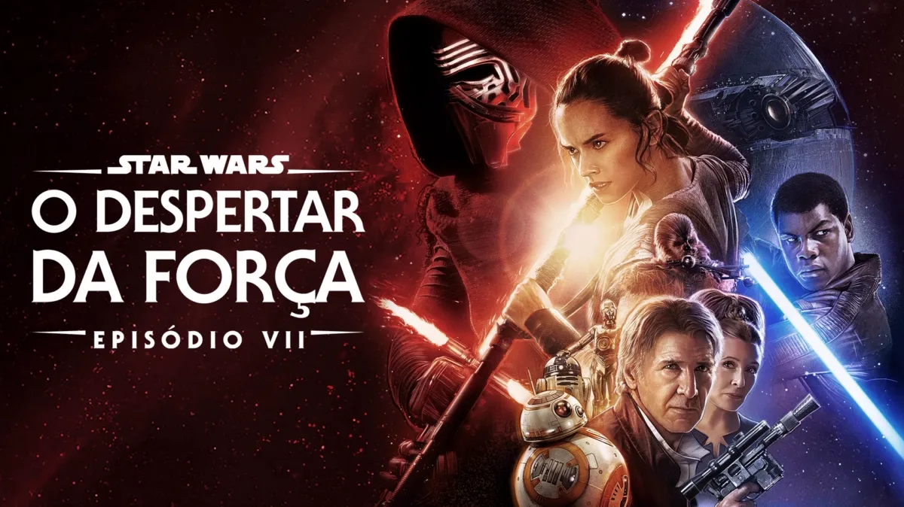
Star Wars: O Despertar da Força (2015) é um filme que inicia uma nova era na saga de Star Wars, apresentando novos personagens e expandindo o universo cinematográfico com aventuras épicas e batalhas intensas.
26. Star Wars: Os Últimos Jedi (filme)
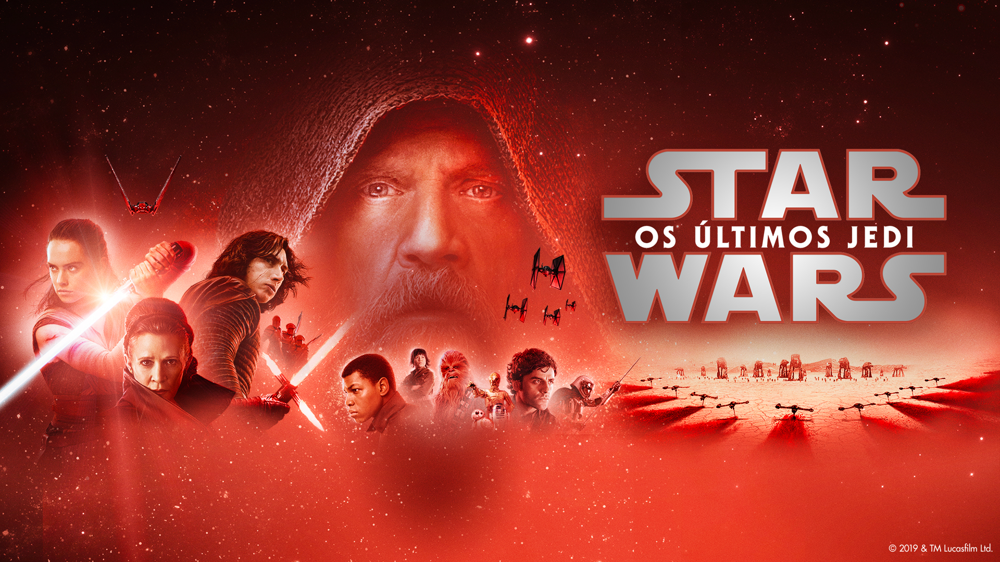
Star Wars: Os Últimos Jedi (2017) é um filme que mostra a jornada de Rey em sua busca por identidade e seu confronto com Kylo Ren, enquanto explora os mistérios da Força e o legado dos jedi.
27. Star Wars: A Ascensão Skywalker (filme)
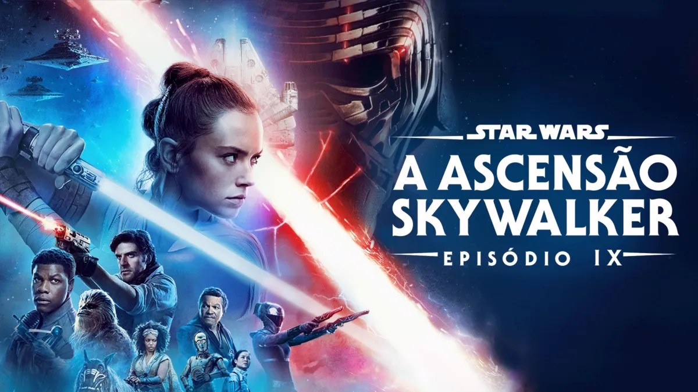
Star Wars: A Ascensão Skywalker (2019) Mostra o retorno do Imperador Palpatine, a Resistência toma a frente da batalha. Treinando para ser uma completa Jedi, Rey se encontra em conflito com passado e futuro, e teme pelas respostas que pode conseguir com Kylo Ren.